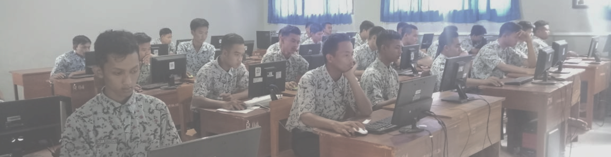

TUJUAN smkn 1 sambeng
-
Mempersiapkan peserta didik menjadi manusia yang agamis, berakhlak
mulia, dan memiliki kepribadian Bangsa Indonesia serta sehat
jasmani dan rohani sebagai landasan moral untuk berkarier,
-
Memberi bekal kepada peserta didik dengan ilmu pengetahuan dan
teknologi, agar mampu beradaptasi dengan lingkungan
kerjanya,sesuai dengan perkembangan ilmu pengetahuan dan teknologi
serta mampu memelihara lingkungan hidup yang sehat.
-
Memberi bekal kepada peserta didik dengan wawasan entrepreneur
agar ke depan mampu mengembangkan usaha sendiri, mengisi lapangan
kerja yang tersedia sehingga mampu memenangkan persaingan lokal
dan global,
-
Memberi bekal kepada peserta didik dengan sikap, perilaku dan
skill pilihan sesuai dengan minat dan bakatnya.
-
Memberi bekal peserta didik dengan kompetensi keahlian (kejuruan)
yang sesuai dengan minat dan bakatnya sebagai bekal untuk
berkarier, berwirausaha dan dapat mengembangkan sikap professional
sesuai dengan kompetensi keahlian yang dimilikinya.
-
Memberi bekal kepada peserta didik dengan pengetahuan dan
pengalaman di bidang sains dan teknologi, yang dapat digunakan
sebagai bekal untuk mengikuti pendidikan di perguruan tinggi.